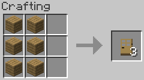
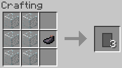
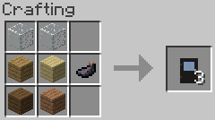
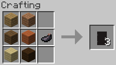

The mod removes the default, vanilla recipe for the door and replaces it with a recipe that follows the pattern introduced in the 1.8 version of Minecraft. Similarly, the vanilla recipe for the trapdoor has been replaced with one specific to oak planks.
Additionally, the vanilla Oak and Iron Doors, as well as the vanilla Oak Trapdoor, have been moved from their default creative tabs to the mod's custom creative tab.
   